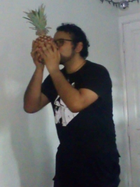

Gabriel Muñoz | WDD 130

Gabriel is a Software Development and Web Design student at BYU-Idaho. He also holds a Higher Technical Professional degree in Automation and Industrial Control and a Technical degree in Industrial Mechanics.
He serves as President of the Elders Quorum in his ward and enjoys life with maturity and a touch of madness. He loves pineapples!
He is currently writing his novel: "Blue Moon: The Princess's Calling."